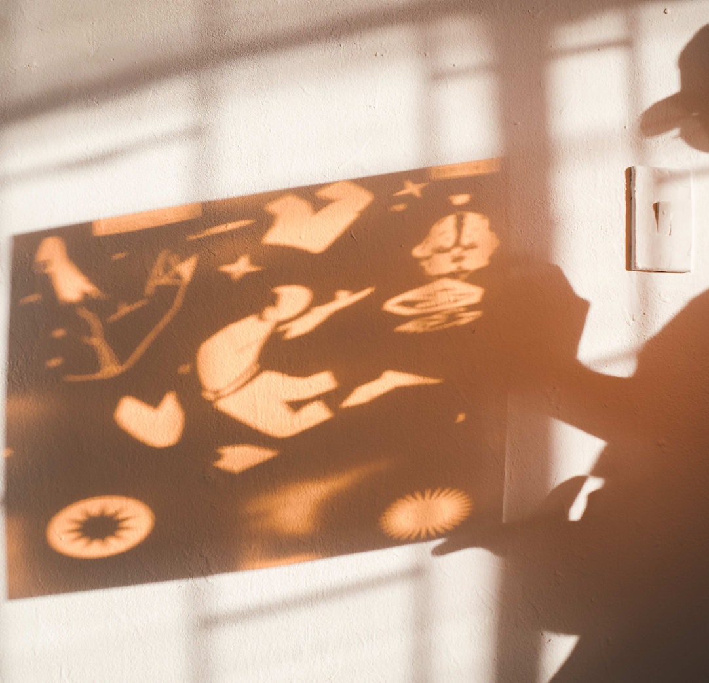
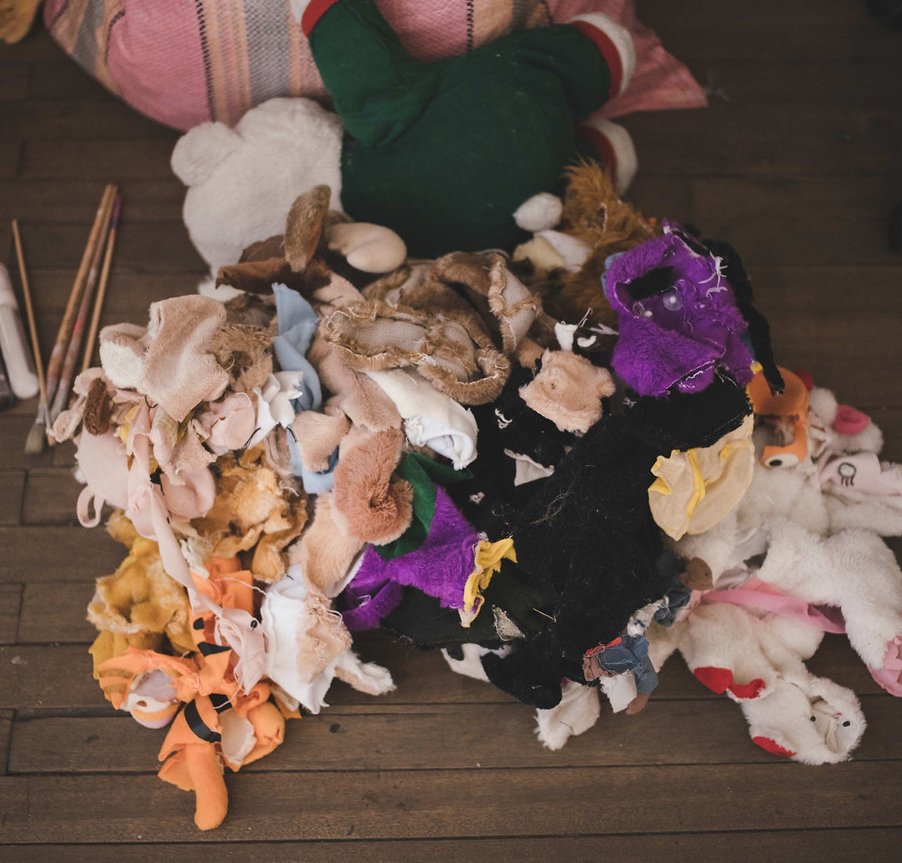
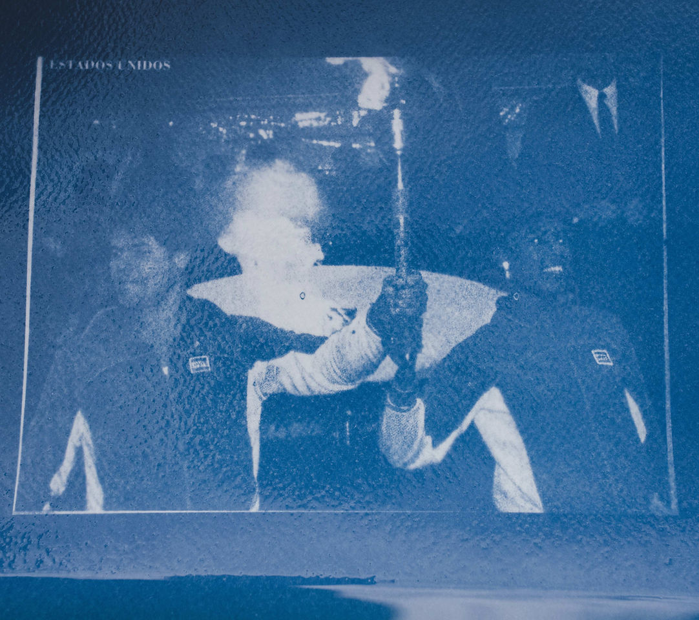
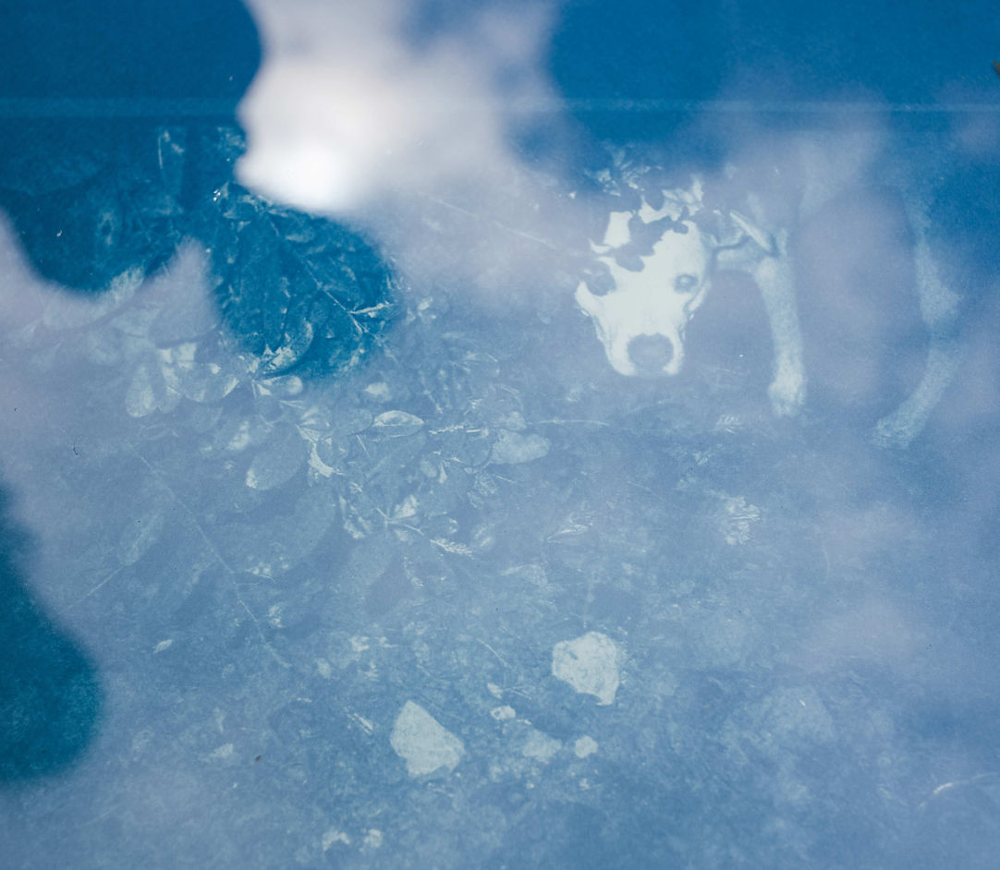
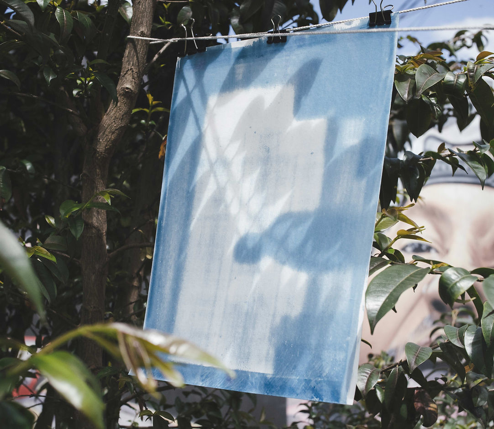
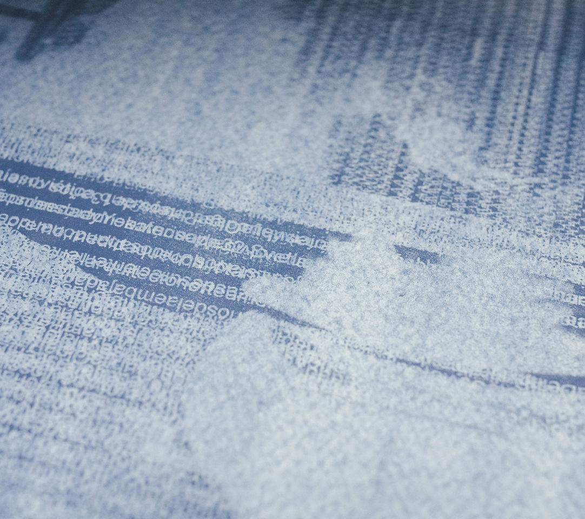
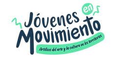
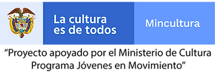

signals
COLECTIVO DESTELLO
Sofía Lozano Juan Andrés Herrera Sergio Quiroga
Grant awarded by the Ministry of Culture
Jóvenes en Movimiento 2021
A signal is a sign, a gesture or some other indication or warning of something. We read signals when we communicate with another person and manage to grasp what that gesture means. Signals may involve devices, flashing lights, movements of the hands, the arms or other parts of the body, and they exist in order to warn, alert or point something out.
In this project we devised signals to serve each day, over the course of three laboratories, building a dialogue out of the materials, the participants, and the situation or subject we set out to explore that day. In this sense we made objects, some of them ephemeral, meant to catch someone’s attention and try to tell them something.
"Señales" took place between 30 November and 7 December 2021 at "Más Allá", in Bogotá and its surroundings. Eight sessions of the three laboratories were held, attended by people curious about exploring, through collective making, ideas around the body, disguise, lightness, and the appearance of an image by means of an analogue printing technique (cyanotype). The photographs shown here are the result of those exercises.

SIGNAL 1. Making things in order to disappear.
30 November - 3 December.

SIGNAL 2. Let us play in the forest.
2 and 7 December.

SIGNAL 3. Inventory through cyanotype, analogue printing.
1 - 4 December.

SIGNAL 3. Inventory through cyanotype, analogue printing.
1 - 4 December.

SIGNAL 3. Inventory through cyanotype, analogue printing.
1 - 4 December.

SIGNAL 3. Inventory through cyanotype, analogue printing.
1 - 4 December.
Photography: Juan Camilo Forero.
Collaboration: Maria José Espejo.
Project supported by the Ministry of Culture.
Jóvenes en Movimiento programme / 2021.

